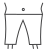

Trofej Martina na H. se podařilo vyvinout v České republice za pomoci inovativních metod zlepšujících kvalitu života formou nohejbalového turnaje. Na antukovém hřišti a v jeho bezprostředním okolí dochází k vytvoření koncentrovaného životního prostředí mužů a žen, kteří se díky unikátnímu nastavení hry bez rozhodčího sportovně i osobnostně rozvíjejí, a stávají se tak zajímavými, chápajícími, milovanými nebo populárními lidmi, kteří se nezřídka prosazují třeba i ve světe byznysu.
Turnaj je velmi vzácný, ale paradoxně je otevřený všem lidem. Neexistují například omezení věku ani pohlaví. Mohou se zúčastnit začátečníci či profesionálové ve smíšených nebo čistě ženských či mužských dvojicích anebo trojicích. Přijít mohou samozřejmě i jednotlivci, kteří si vyhlídnou ideální spoluhráče až přímo na místě, což může mít za následek už první vážnější změny v životě zúčastněných.
Pro kompletní transformační zážitek je organizátory akce doporučeno stihnout zahájení turnaje na Libeňském ostrově v neděli 14. 9. 2025 od 14 hodin a zaplatit startovné ve výši symbolických 150 Kč/osobu. Vybrané peníze se pak použijí na pronájem kurtu a v případě zisku na financování dalšího výzkumu a vývoje Trofeje Martina na H.
Pamatuji si to jako včera. Nevěřil jsem nikomu a ničemu. S nikým jsem se nevídal. Neměl jsem skoro žádné peníze. Lidi mi přestali půjčovat. Bylo to strašné období. Cítil jsem se prázdný. Hned od rána podrážděný. Padaly na mě věci. Na ulici jsem viděl jen zmar. Ve volných chvílích jsem pak chodil na internet do knihovnym, četl si zprávy a hádal se v kantýně s lidmi bez domova nebo nahlas volal do hluchého telefonu. Bylo to velmi náročné období mého života.
V tu dobu jsem narazil i na nohejbal. Ani ve snu by mě nenapadlo, že mi dá tak velkou životní lekci. Nikdy nezapomenu na ten moment, když jsem na hřišti uslyšel ten výkřik, zvedl jsem reflexivně zrak a míč mě v zápětí trefil přímo do obličeje. Brýle se mi rozletěly na kousky a já upadl v šoku na zem. Z očí mi tryskaly slzy a chtělo se mi volat o pomoc. Jenže se ukázalo, že mě zasáhla krásná dívka. Byla celá od antuky. Podala mi ruku, pohladila mě po tváři a začli jsme se líbat.

Nemohl jsem si nechat takový transformační zážitek pro sebe. Společně s dalšími lidmi jsme založili nohejbalový turnaj pro všechny muže a ženy, aby se jim jednoduše naskytla možnost zažít něco podobného. Teď stačí jen přijít včas na další termín turnaje a na místě zaplatit 150 Kč startovné. Vše ostatní už by pak snad měla udělat Trofej Martina na H. Nohejbalový turnaj, který se hraje bez rozhodčího. Ještě teď se celý chvěju, jak je to neskutečné.
Klíčové je najít dům se zelenou plechovou střechou a žlutým nápisem "BP" zhruba v prostřed Libeňského mostu (zastávka tramvaje). Okolo domu vede cyklostezka směr Troja, po které musíte ujít pár desítek metrů na křižovatku ve tvaru písmene "T" jako Trofej Martina na H.
Na křižovatce ve tvaru "T" (ulice Menclova) se dáte doleva. Půjdete vedle stříbrného zábradlí, kterého se raději chytněte, abyste nepřešli odbočku doleva na jeho konci. Zde zahnete do křoví. Vypadá to, že jste se zratili, že nikam nedojdete, jenže po pár metrech se stane něco nečekaného. Jste na antukovém kurtu a pomalu vám dochází, že tady zažijete něco velkého.

12:00 - 13:59 hod: Společná příprava kurtů, příjezd prvních účastníků a organizátorů akce
14:00 hod.: Rozlosování a zahájení Trofej Martina na H. 2025
14:30 hod.: Zapálení táborového ohně pro zahřátí nehrajících účastníků nebo k tepelnému upravení vlastnoručně připravených jídel
14:35 hod.: Nalazení erární kytary nebo zapojení rádia s hudbou
Ne.
Na místě existuje možnost pro převléknutí do sportovního úboru.
Ano, hned vedle kurtu je poměrně známé bistro U Budyho.
Startovné je pouhých 150 Kč/osobu.
Mám rád Trofej Martina na H. Je to nohejbalový turnaj bez předsudků. Určený je aktivním ženám i mužům a hraje se bez rozhodčího. Musím říct, že na místě překvapuje i výborným zázemím. Nečekal jsem to, ale v areálu bylo i několik klidných zákoutí, kde si můžete přehodit trenky. Navíc, aby toho nebylo málo, je dostupný i široký výběr nápojů v bistru vedle kurtu, který pořadatelé někdy obohatí i o jídlo, když přinesou banány a pak ještě k tomu rozdělají oheň a opečou některým sportovcům vuřty. Velmi kvalitní turnaj. Myslím si, že mi to změnilo život.


{kind=link}
{kind=link}
{kind=link}
{kind=link}
{kind=link}
{kind=link}